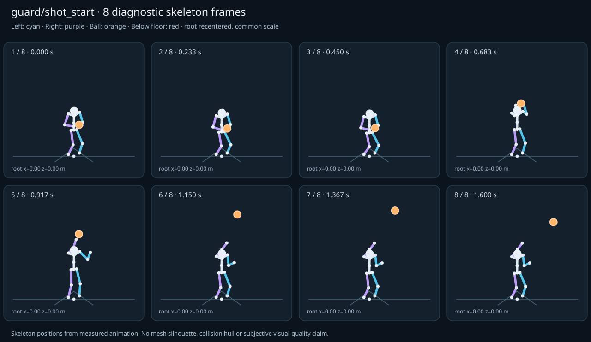

מה הוריד את הציון
- קפיצות פוזה: LeftHand בזמן 0.9167 ש׳; קפיצת סיבוב שקולה 69.056 מעלות ב־60Hz (אדום)
- כניסה ויציאה מול המתנה: פער ב־יציאה מול המתנה; יחס חריגה 4.1379 (אדום)
כיסוי: 100%. לא כל מדד חל על כל קליפ; הסטטוס והראיות מפורטים למטה.
שמונה פריימים
תצוגת שלד אבחונית שנבנתה מהפריימים הנמדדים. צד שמאל בכחול, ימין בסגול, כדור בכתום. מיקום השורש ממורכז לצפייה; מיקומו בעולם כתוב בכל פריים.

המדדים והראיות
| מדד | מצב | ערך | ציון | סף ופרטי מדידה |
|---|---|---|---|---|
| החלקת רגליים | ירוק | 0 height ratio | 100 | {
"definition": {
"label": "החלקת רגליים",
"unit": "height ratio",
"green": 0.01,
"yellow": 0.035,
"weight": 18,
"description": "Maximum horizontal sole displacement from the first sample of each declared support window, divided by character height. Inferred support is used only when no windows were supplied."
},
"value": 0.000025,
"status": "green",
"score": 99.95,
"evidence": {
"coordinateSpace": "native GLB external Motion node (applied once)",
"supportSource": "declared",
"windows": 2,
"samples": 194,
"maxDriftMeters": 0.000047,
"p95SpeedMetersPerSecond": 0.002737,
"worst": {
"bone": "LeftFoot",
"t": 1.016667,
"start": 0,
"end": 1.6,
"driftMeters": 0.000047
}
}
} |
| חדירה לרצפה | ירוק | 0 height ratio | 99 | {
"definition": {
"label": "חדירה לרצפה",
"unit": "height ratio",
"green": 0.005,
"yellow": 0.02,
"weight": 15,
"description": "Maximum depth of the supplied sole probe points and all skeletal joint centers below the declared floor plane, divided by height. Sole probes are not a mesh collision audit."
},
"value": 0.000151,
"status": "green",
"score": 99.4,
"evidence": {
"samples": 1940,
"floorY": 0,
"probeKind": "declared sole probes plus skeletal joint centers (no mesh surfaces)",
"maxDepthMeters": 0.000283,
"worst": {
"t": 0.783333,
"bone": "LeftFoot",
"depthMeters": 0.000283,
"y": -0.000283
}
}
} |
| קפיצות פוזה | אדום | 5.469 discontinuity ratio | 20 | {
"definition": {
"label": "קפיצות פוזה",
"unit": "discontinuity ratio",
"green": 1,
"yellow": 2.5,
"weight": 18,
"description": "Maximum adjacent 60 Hz-equivalent step: root-relative marker displacement / 0.04 height, root-relative rotation / 15 degrees, or root translation / 0.08 height. A fast continuous action can also exceed this screening threshold."
},
"value": 5.468473,
"status": "red",
"score": 20.32,
"evidence": {
"adjacentPairs": 96,
"observations": 1632,
"maxDegrees60Hz": 69.055966,
"maxMarkerStepHeight60Hz": 0.218739,
"maxRootStepHeight60Hz": 0,
"worst": {
"ratio": 5.468473186725283,
"t": 0.916667,
"previousTime": 0.9,
"bone": "LeftHand",
"markerStepHeight60Hz": 0.218739,
"degrees60Hz": 1.139745
}
}
} |
| חריגות אנטומיות | ירוק | 0 % affected frames | 100 | {
"definition": {
"label": "חריגות אנטומיות",
"unit": "% affected frames",
"green": 0.5,
"yellow": 3,
"weight": 14,
"description": "Percentage of frames with elbow or knee flexion above 165 degrees, neck bend above 80 degrees, or a segment length changing by more than 5%. Optional calibrated hinge checks detect reverse knee flexion above 8 degrees. Conservative marker limits do not diagnose axial joint twist."
},
"value": 0,
"status": "green",
"score": 100,
"evidence": {
"testedFrames": 97,
"affectedFrames": 0,
"checks": 1649,
"maxLimbFlexionDegrees": 133.585805,
"maxRelativeSegmentLengthChange": 0,
"hingeDirectionChecked": true,
"axialTwistChecked": false,
"violations": []
}
} |
| מגע בכדור | ירוק | 0.002 height ratio | 98 | {
"definition": {
"label": "מגע בכדור",
"unit": "height ratio",
"green": 0.015,
"yellow": 0.05,
"weight": 13,
"description": "Maximum absolute distance from the ball surface to the sampled, bone-transformed declared contact point, divided by height. Events are evaluated at their exact declared times by interpolation."
},
"value": 0.001685,
"status": "green",
"score": 97.75,
"evidence": {
"radiusMeters": 0.12,
"samples": 100,
"missed": [],
"contacts": [
{
"t": 0.516667,
"bone": "LeftHand",
"gapMeters": 0.003167,
"signedGapMeters": -0.003167,
"centerDistanceMeters": 0.116833,
"contactPoint": [
0.089571,
1.268232,
0.390111
],
"ballCenter": [
-0.027051,
1.266206,
0.383381
],
"declaredLocalPoint": true
},
{
"t": 0.483333,
"bone": "LeftHand",
"gapMeters": 0.002572,
"signedGapMeters": -0.002572,
"centerDistanceMeters": 0.117428,
"contactPoint": [
0.101909,
1.124023,
0.386713
],
"ballCenter": [
-0.015418,
1.123201,
0.381927
],
"declaredLocalPoint": true
},
{
"t": 0.55,
"bone": "LeftHand",
"gapMeters": 0.002524,
"signedGapMeters": -0.002524,
"centerDistanceMeters": 0.117476,
"contactPoint": [
0.077278,
1.41868,
0.391823
],
"ballCenter": [
-0.04,
1.418495,
0.385
],
"declaredLocalPoint": true
},
{
"t": 0.583333,
"bone": "LeftHand",
"gapMeters": 0.001716,
"signedGapMeters": -0.001716,
"centerDistanceMeters": 0.118284,
"contactPoint": [
0.065174,
1.56217,
0.392503
],
"ballCenter": [
-0.052949,
1.563961,
0.386619
],
"declaredLocalPoint": true
},
{
"t": 0.483333,
"bone": "RightHand",
"gapMeters": 0.001707,
"signedGapMeters": -0.001707,
"centerDistanceMeters": 0.118293,
"contactPoint": [
-0.133593,
1.124166,
0.387134
],
"ballCenter": [
-0.015418,
1.123201,
0.381927
],
"declaredLocalPoint": true
},
{
"t": 0.516667,
"bone": "RightHand",
"gapMeters": 0.001486,
"signedGapMeters": -0.001486,
"centerDistanceMeters": 0.118514,
"contactPoint": [
-0.145286,
1.268896,
0.391039
],
"ballCenter": [
-0.027051,
1.266206,
0.383381
],
"declaredLocalPoint": true
},
{
"t": 0.45,
"bone": "LeftHand",
"gapMeters": 0.001287,
"signedGapMeters": -0.001287,
"centerDistanceMeters": 0.118713,
"contactPoint": [
0.112273,
1.008094,
0.382986
],
"ballCenter": [
-0.00642,
1.008355,
0.380802
],
"declaredLocalPoint": true
},
{
"t": 0.616667,
"bone": "LeftHand",
"gapMeters": 0.001122,
"signedGapMeters": -0.001122,
"centerDistanceMeters": 0.118878,
"contactPoint": [
0.054237,
1.688615,
0.391686
],
"ballCenter": [
-0.064582,
1.689644,
0.388073
],
"declaredLocalPoint": true
},
{
"t": 0.45,
"bone": "RightHand",
"gapMeters": 0.001042,
"signedGapMeters": -0.001042,
"centerDistanceMeters": 0.118958,
"contactPoint": [
-0.125356,
1.008063,
0.383069
],
"ballCenter": [
-0.00642,
1.008355,
0.380802
],
"declaredLocalPoint": true
},
{
"t": 0.55,
"bone": "RightHand",
"gapMeters": 0.000669,
"signedGapMeters": -0.000669,
"centerDistanceMeters": 0.119331,
"contactPoint": [
-0.159075,
1.419456,
0.392763
],
"ballCenter": [
-0.04,
1.418495,
0.385
],
"declaredLocalPoint": true
},
{
"t": 0.65,
"bone": "LeftHand",
"gapMeters": 0.000478,
"signedGapMeters": -0.000478,
"centerDistanceMeters": 0.119522,
"contactPoint": [
0.045935,
1.783966,
0.390528
],
"ballCenter": [
-0.07358,
1.784158,
0.389198
],
"declaredLocalPoint": true
},
{
"t": 0.416667,
"bone": "LeftHand",
"gapMeters": 0.000187,
"signedGapMeters": -0.000187,
"centerDistanceMeters": 0.119813,
"contactPoint": [
0.118441,
0.942149,
0.380473
],
"ballCenter": [
-0.001372,
0.942263,
0.380171
],
"declaredLocalPoint": true
},
{
"t": 0.616667,
"bone": "RightHand",
"gapMeters": 0.000185,
"signedGapMeters": -0.000185,
"centerDistanceMeters": 0.119815,
"contactPoint": [
-0.184321,
1.688504,
0.392153
],
"ballCenter": [
-0.064582,
1.689644,
0.388073
],
"declaredLocalPoint": true
},
{
"t": 0.583333,
"bone": "RightHand",
"gapMeters": 0.000181,
"signedGapMeters": -0.000181,
"centerDistanceMeters": 0.119819,
"contactPoint": [
-0.172573,
1.562245,
0.393244
],
"ballCenter": [
-0.052949,
1.563961,
0.386619
],
"declaredLocalPoint": true
},
{
"t": 0.416667,
"bone": "RightHand",
"gapMeters": 0.000166,
"signedGapMeters": -0.000166,
"centerDistanceMeters": 0.119834,
"contactPoint": [
-0.121205,
0.942137,
0.380475
],
"ballCenter": [
-0.001372,
0.942263,
0.380171
],
"declaredLocalPoint": true
},
{
"t": 0.65,
"bone": "RightHand",
"gapMeters": 0.000144,
"signedGapMeters": -0.000144,
"centerDistanceMeters": 0.119856,
"contactPoint": [
-0.193426,
1.783899,
0.390709
],
"ballCenter": [
-0.07358,
1.784158,
0.389198
],
"declaredLocalPoint": true
},
{
"t": 0.816667,
"bone": "RightHand",
"gapMeters": 0.000088,
"signedGapMeters": -0.000088,
"centerDistanceMeters": 0.119912,
"contactPoint": [
-0.199903,
2.055391,
0.409882
],
"ballCenter": [
-0.08,
2.054722,
0.408611
],
"declaredLocalPoint": true
},
{
"t": 0.85,
"bone": "RightHand",
"gapMeters": 0.000086,
"signedGapMeters": -0.000086,
"centerDistanceMeters": 0.119914,
"contactPoint": [
-0.199907,
2.125804,
0.415928
],
"ballCenter": [
-0.08,
2.125,
0.415
],
"declaredLocalPoint": true
},
{
"t": 0.783333,
"bone": "RightHand",
"gapMeters": 0.00004,
"signedGapMeters": -0.00004,
"centerDistanceMeters": 0.11996,
"contactPoint": [
-0.199954,
1.975539,
0.402491
],
"ballCenter": [
-0.08,
1.975278,
0.401389
],
"declaredLocalPoint": true
},
{
"t": 0.883333,
"bone": "RightHand",
"gapMeters": 0.000019,
"signedGapMeters": -0.000019,
"centerDistanceMeters": 0.119981,
"contactPoint": [
-0.19998,
2.167987,
0.419076
],
"ballCenter": [
-0.08,
2.167778,
0.418889
],
"declaredLocalPoint": true
}
],
"contactDetailsTruncated": true,
"coordinateSpace": "native GLB external Motion node (applied once)"
}
} |
| כניסה ויציאה מול המתנה | אדום | 4.138 continuity ratio | 41 | {
"definition": {
"label": "כניסה ויציאה מול המתנה",
"unit": "continuity ratio",
"green": 1,
"yellow": 3,
"weight": 10,
"description": "Worst entry/exit mismatch to the best matching idle phase: RMS marker error / 0.04 height, RMS bone rotation / 25 degrees, or RMS endpoint velocity error / 0.75 height per second. Horizontal root translation is aligned; root height and body pose remain measurable."
},
"value": 4.137896,
"status": "red",
"score": 40.52,
"evidence": {
"entry": {
"ratio": 3.7633533356697124,
"t": 0,
"idleTime": 0,
"markers": 17,
"rmsPositionHeight": 0.150534,
"rmsRotationDegrees": 71.359532,
"rmsVelocityHeightPerSecond": 0.034554,
"velocityEvaluated": true
},
"exit": {
"ratio": 4.137895868486819,
"t": 1.6,
"idleTime": 0,
"markers": 17,
"rmsPositionHeight": 0.165516,
"rmsRotationDegrees": 58.572049,
"rmsVelocityHeightPerSecond": 0,
"velocityEvaluated": true
},
"worstEndpoint": "exit",
"alignment": "horizontal root translation; raw asset poses used when provided"
}
} |
| מהירות גוף מול צעדים | לא חל | — relative speed error | — | {
"definition": {
"label": "מהירות גוף מול צעדים",
"unit": "relative speed error",
"green": 0.2,
"yellow": 0.5,
"weight": 8,
"description": "Relative difference between average root travel speed and the median backward support-foot sweep speed relative to the root. Cadence and implied stride lengths are also reported. In-place clips need an explicit reference travel scenario; stationary actions are not scored as locomotion."
},
"value": null,
"status": "not-applicable",
"score": null,
"reason": "This action is not declared locomotion.",
"evidence": {}
} |
| סימטריה | ירוק | 0 relative mismatch | 100 | {
"definition": {
"label": "סימטריה",
"unit": "relative mismatch",
"green": 0.03,
"yellow": 0.1,
"weight": 4,
"description": "Maximum bilateral segment-length mismatch. Looping locomotion additionally compares reflected half-cycle leg markers; explicit pose symmetry compares simultaneous bilateral markers. One-sided actions retain unscored motion diagnostics, so a valid kick or dribble arm is not penalized for intentional asymmetry."
},
"value": 0,
"status": "green",
"score": 100,
"evidence": {
"mode": "structural",
"modeSource": "structural default for intentional asymmetry",
"structuralMismatch": 0,
"segments": [
{
"segment": "Arm-ForeArm",
"mismatch": 0
},
{
"segment": "ForeArm-Hand",
"mismatch": 0
},
{
"segment": "UpLeg-Leg",
"mismatch": 0
},
{
"segment": "Leg-Foot",
"mismatch": 0
}
],
"motionRmsHeight": null,
"worstMotion": null,
"bilateralPoseRmsHeightUnscored": 0.155829,
"note": "One-sided authored actions are checked for structural symmetry only."
}
} |